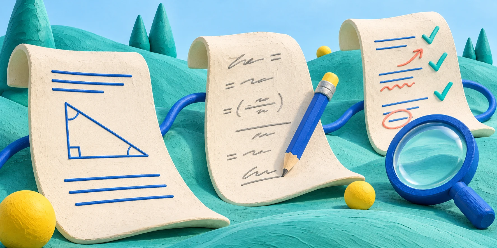

一份試卷，從出題到評改。
保留老師熟悉的試卷和評分準則，讓原稿、學生作答與評改連在一起。
上傳自己的試卷
01 / 準備
原卷和答案，一起整理。
上傳試卷與參考答案，核對題目、配分及評分點。
02 / 核對
手寫過程，保留下來。
接收照片或 PDF，對照原稿修正辨識內容。
03 / 評改
每一分，由老師確認。
查看 AI 建議與作答依據，再確認分數和評語。

先選一份小測，走完整個流程。
目前從香港初中數學與科學開始。
繼續上次的評改
確認保存到伺服器後，換電腦也能接續整理、核對與評改。
開始前，先了解。
所有常見問題可以用老師自己出的試卷嗎？
可以。上傳試卷與參考答案後，先核對題目、答案和每個評分點，再確認試卷版本。學生的照片或 PDF 會按這份試卷辨識及批改。
手寫辨識錯了怎麼辦？
辨識後會先進入核對頁。對照原稿修改題號、答案、正負號、公式和步驟，確認後才進入改卷。看不清楚的內容應保留待老師判斷。
AI 會直接發布成績嗎？
不會。AI 提供逐評分點的建議與作答依據；老師可修改分數及評語。完成覆核、確認整份試卷後，學生的專屬頁面才顯示結果。
換電腦能接着做嗎？
可以，先確認頁頂顯示已保存到伺服器，再用同一教師帳戶登入。學生用原來的私人連結繼續。未傳完的原檔仍須在原裝置完成上傳。